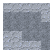

釀酒
釀酒是一門將葡萄轉化為酒精的科學。這其中包含花費時間收集資源、將資源合成為原料，以及享用最終產品的時間。請注意，Firmalife 中的葡萄酒（就其本身而言）除了群巒傳說常規的酒精用途外，並無特殊作用。你應該只在想要獲得樂趣時才去釀造它。
物品: firmalife:plant/wild_red_grapes
紅葡萄生成於0-30°C、125-500降雨量的區域，幾乎覆蓋了整個宜居區。
物品: firmalife:plant/wild_white_grapes
白葡萄生成於0-30°C、125-500降雨量的區域，幾乎覆蓋了整個宜居區。


葡萄必須生長在由這些特殊柱子和黃麻纖維搭建的葡萄架上。
要搭建一個葡萄架，先將兩根柱子上下疊放。向左或向右移動兩格，重複此操作。然後，手持黃麻纖維對著其中一根頂部或底部柱子的側面右鍵，以便在柱子之間拉線。葡萄架可以水平連接，形成成排的葡萄。
多方塊結構
一個葡萄架。
只要氣候條件滿足，葡萄藤將在幾個月的時間內沿著葡萄架向上並蔓延生長。它會在七月結果，並在前一個月開花。此後便可收穫葡萄。葡萄也可以在溫室內的葡萄架上種植。


踩踏桶用於搗碎葡萄。手推磨也可用於此目的。
使用踩踏桶時，手持新鮮葡萄對其右鍵。然後，在桶上跳上跳下16次。空手右鍵桶以取出物品。
接著，將葡萄在桶中密封5天以使其發酵。


壓榨是葡萄加工的最後一步。
最左側的槽最多可放入16個葡萄。釀造一瓶葡萄酒需要4個葡萄。中間的四個槽用於將葡萄與其他原料混合，但這是可選的。僅使用紅葡萄或白葡萄會產出紅葡萄酒或白葡萄酒。在白葡萄酒中加入至少一個紅葡萄會製成桃紅葡萄酒。在白葡萄酒中加入糖會製成甜酒。加入二次發酵混合劑（在桶中混合酵母和甜味劑）會製成起泡酒。


Steps
Blow
Blow
-
Pinch
-

Saw
葡萄酒必須裝入由非硅酸鹽玻璃製成的專用酒瓶中。


瓶子標籤可在抄寫臺中重命名，其名稱將添加到葡萄酒的物品提示信息中。
葡萄酒需配備一個軟木塞，其製作方法是將防腐木材在石灰水中浸泡一天。一切就緒後，使用酒瓶槽位灌裝葡萄酒，或手持酒瓶右鍵進行灌裝。